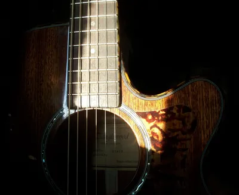
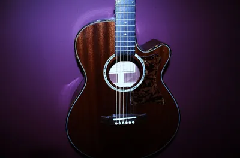

Personal · · 9 min read
My Teacher Said I Shouldn't Go To University
My high school music teacher told me not to aim for university: I was 'more suited to manual labour'.
Photograph © Ken Reid
My Teacher Said I Shouldn't Go To University
In high school, my music teacher told me I shouldn't aim to be a doctor, because I was "more suited to manual labour". In fact, she said that not only to me, but to my parents, at a student-parent night.
I want to be fair to her, but I am writing this with a doctorate. Not the kind she meant, admittedly, a PhD makes you the sort of doctor who is useless in a medical emergency but insufferable when anyone brings up a topic vaguely related to your specialty, yet my title is real, my thesis was dissected by a bunch of people with way more experience than I, and somewhere inside, I still remember being told I wasn't good enough, and couldn't be good enough, by a trusted advisor.
Teachers make thousands of judgement calls, and try to direct their students in the direction best for their displayed aptitudes, skills, abilities and what they appear to enjoy. How did she come to decide I was more suited to working with my hands? A music grade (where, by the way, I scored highly on performance because I loved guitar, and poorly on other parts of the classwork), a snapshot of who I am, and a very narrow idea of what my capabilities looks like, in a very specific field. How can a music teacher say "Well, this student kind of sucks at identifying Baroque music from Rococo, so they probably should be a plumber"? Besides the permanent glare I adopt whenever I think of her, what was the real damage? Well, I was lucky, because teenagers today still experience this kind of snapshot judgement, and the research says it does more than describe futures for kids. It writes them.
Quick jargon guide
- Teacher expectation effects: the finding that what a teacher believes about a student can nudge that student's actual outcomes, famously via the "Pygmalion" study. The size of the effect is debated; its existence, much less so.
- Golem effect: Teacher expectation effect's ugly sibling, low expectations dragging performance down.
- Academic self-efficacy: a student's belief that they can succeed at academic work, one of the strongest psychological predictors of how they actually do.
- g (general intelligence): the well-replicated statistical finding that performance across mental tasks correlates. Real, useful, and still only part of the picture any single grade captures.
- Multiple intelligences: Gardner's popular theory that intelligence comes in eight-ish flavours. Scientifically shaky as psychometrics, but pointing at something real about the plurality of human skill.
What she was looking at
Whatever my teacher saw when she looked at me, I'm guessing it was something to do with grades from when I was forced to play glockenspiel. That thinking is the design of the system she worked in. School distils each pupil into a thin column of numbers generated by one activity: sitting still, absorbing material in a fixed order at a fixed age, and reproducing it silently on paper (or by bashing thin metal plates in a specific order and rhythm). Do that well and you're "academic." Do it badly, or do it later than your teens, because adolescent brains run on wildly different schedules, and the system files you as "not academic".
Grades are a decent-but-leaky predictor even of the thing they're supposed to predict: meta-analytic work like Richardson, Abraham and Bond's review[1] finds prior grades correlate moderately with university performance, leaving an enormous share of the outcome to everything else: effort regulation, study strategies, tutoring, circumstances, and, notably, academic self-efficacy, whether the student believes they can do it. Sounds a bit weak, right?

Prophecy is an intervention
If a teenager's belief in their own academic capability is one of the strongest psychological predictors of their university performance, then look again at what a sentence like "you're more suited to manual labour" actually is: it's an intervention on the predictor variable. It changes the variables that cause the outcome.
This is the territory of the famous Pygmalion study,[2] where teachers told (falsely) that certain randomly-chosen pupils were about to bloom saw those pupils gain the most, and of its grim mirror, the golem effect, where low expectations do the opposite work. The literature has spent fifty years arguing about effect sizes, which is valid: expectation effects are usually modest, on average. A stray remark from an authority figure, landing on a fifteen-year-old at the age when identity is wet cement, doesn't get experienced as a data point but as a verdict, and some of us can quote it verbatim decades later, which should tell you something about the impression such remarks can make on kids. That is to say: it may not always stick, it likely depends on the relationship the kid has with the teacher, the emotional vulnerability and circumstances of the kid, and counterweights, but it did with me, and it does with others.
I got lucky: enough stubbornness to treat the verdict as a provocation, and enough people elsewhere in my life balancing it out (thanks Mum + Dad). A different kid (same ability, fewer counterweights) hears the same sentence and might be dissuaded entirely from whatever their goals are.
The many shapes of capable
I've previously taken a flamethrower to pop-psychology taxonomies of the mind, and I intend to stay consistent. Howard Gardner's "multiple intelligences" (the theory that we each carry separate musical, spatial, interpersonal, bodily intelligences) is, as psychometrics, shaky: the abilities correlate, the categories resist clean measurement, and the framework has never out-predicted boring old g. If you came here for "everyone is secretly a genius in their own modality," you are reading the wrong article.
Even mainstream intelligence research describes ability as a hierarchy: a general factor, yes, but with broad group abilities (verbal, spatial, quantitative, mechanical) and thousands of specific skills layered beneath, all of it interacting with interest, practice, temperament, and time. A school grade samples one thin horizontal slice of that, once, at an age when the whole edifice is still under construction and might be entirely changed because the kid was going through something that morning. The carpenter's spatial reasoning, the care worker's social perception, the mechanic's fault-finding, the musician's ear: these are real, demanding, trainable forms of capability that grades just don't measure at one time, nevermind over time.
The insult in "suited to manual labour" was never to me, it was to manual labour. The sentence only works as a put-down inside a worldview where the trades are a punishment tier for the insufficiently bookish, or for people who have ADHD or similar difficulties in the neurotypically designed classroom, a worldview that is snobbish about the people who build its houses and wire its schools, and that pushes academically-shaped kids away from skilled work they might have loved.
There's a gendered layer to this, too. I recently read Boys Don't Try? Rethinking Masculinity in Schools by Matt Pinkett and Mark Roberts,[3] two teachers examining why boys collect verdicts like mine so reliably. A lot of what gets filed under "boys don't try" is self-protection (if you never try, failing can't become evidence about you), and the fix is not lowering the bar to match the stereotype but refusing the stereotype altogether: high expectations, warm relationships, and no prophecies. I'd hand it to any teacher who has ever caught themselves sorting a class into who is and isn't "university material".
If you were told similarly:
- A grade measured how you did one kind of task, in one format, at one age, under whatever was happening at home that year. It contains no information about you at 20, 30 or 40.
- Self-efficacy isn't magic thinking; it's the thing that determines whether you apply, persist, and ask for help.
- Access courses, mature entry, apprenticeships that become degrees, degrees that start at 30. The system's front door has a strange obsession with your teens, it's hardly the end.
- If the trades, or care, or making things is where your capability lives, that's not a consolation prize, that's the goal that society doesn't recognize as success (and considering all the "white collar" job difficulties, the trades are a very lucrative, respectable and desirable goal).
To my teacher, if she's reading
If she's still alive, I doubt she remembers saying it. That's just it though - the sentence that lodged in me for decades probably cost her four seconds and was immediately forgotten. I hope her years of teaching had better impacts on kids than that one remark, and I'd rather this post reach some teacher mid-career than reach her. So, to that teacher: you hold a variable that the meta-analyses rank near the top of the stack, and you adjust it every time you tell a teenager what they are. Forecast less, care more. You will be wrong about which ones bloom (the research says so, my doctorate says so, too) so you might as well be wrong in the direction that costs nothing and occasionally builds a doctor from a kid who wants to be a doctor.

Common questions
Do you resent her?
Less than the opening of this post suggests. She was one adult having, possibly, one careless afternoon inside a system that invited that kind of sorting. People are rarely improved by contempt, that applies to her too.
Aren't some students just not suited to university?
Of course, and frank guidance about fit, options, and trade-offs is a teacher doing their job. Prophecy plus hierarchy: declaring a teenager's ceiling, from thin evidence, in a tone that ranks the alternatives as lesser. "Have you considered an apprenticeship, they'd be lucky to have you" and "you're not university material" contain the same information and opposite interventions.
Isn't "multiple intelligences" debunked?
As a psychometric theory, it has serious problems, see the section above, and my learning-styles post for the adjacent myth. Ability is demonstrably plural beneath the general factor, grades sample it narrowly, and capability keeps developing long after school stops measuring.
What should a teacher say instead?
Describe the path, not the person: "this is what the next grade up looks like, here's the gap, here's how people close it."
References
- Richardson, M., Abraham, C., & Bond, R. (2012). Psychological correlates of university students' academic performance: A systematic review and meta-analysis. Psychological Bulletin, 138(2), 353–387. https://doi.org/10.1037/a0026838
- Rosenthal, R., & Jacobson, L. (1968). Pygmalion in the classroom: Teacher expectation and pupils' intellectual development. The Urban Review, 3(1), 16–20. https://doi.org/10.1007/BF02322211
- Pinkett, M., & Roberts, M. (2019). Boys Don't Try? Rethinking Masculinity in Schools. Routledge. https://doi.org/10.4324/9781351163729